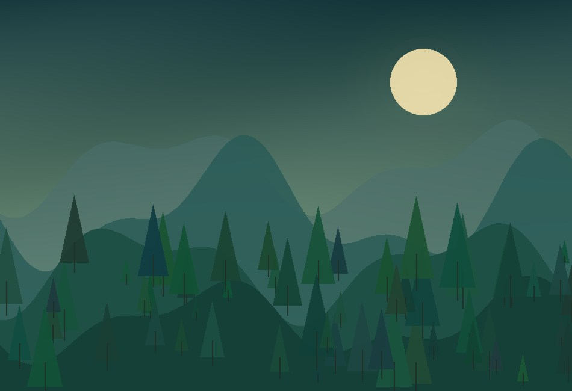
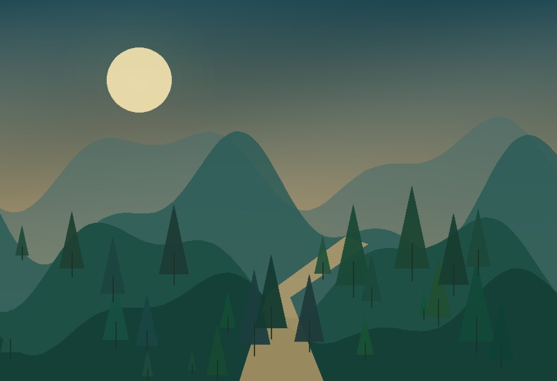
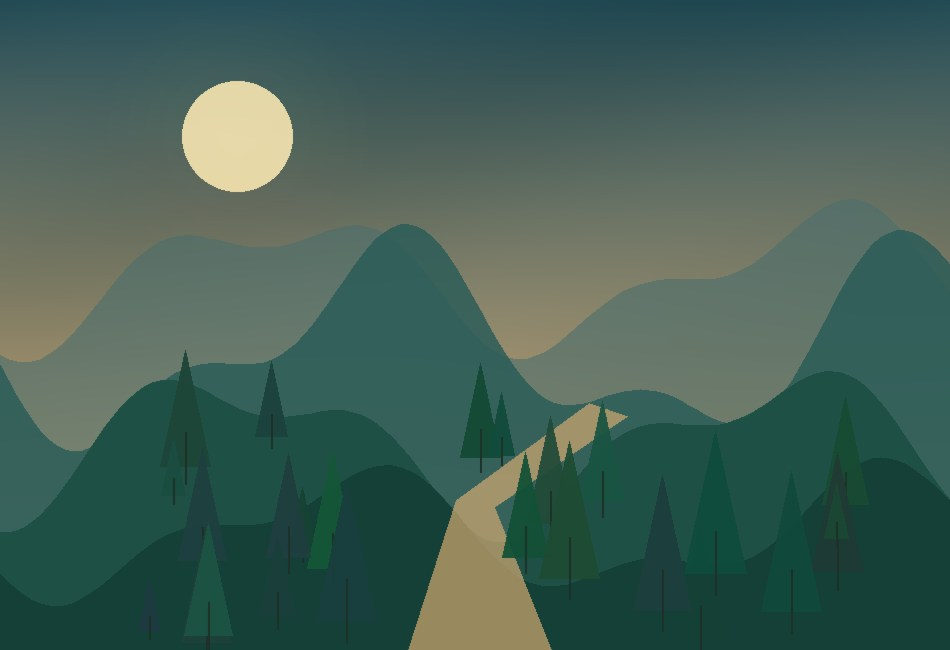

Explore Trails
Discover hiking routes and find useful information before visiting.
Explore routes →Discover new hiking routes, explore the outdoors, and share your adventures with fellow nature lovers.
Whether you are new to hiking or love discovering new places, TrailShare helps you plan and share your adventures.
Discover hiking routes and find useful information before visiting.
Explore routes →Tell others about your favourite hiking experience and helpful tips.
Share a route →Learn essential preparation, equipment and outdoor safety basics.
Read the guide →
TrailShare is a student-designed website for people who enjoy hiking and exploring nature. It brings route ideas, personal experiences and simple hiking advice together in one place.
Our goal is to help university students, beginners and outdoor enthusiasts find useful information and explore responsibly.

Open hill views and sunrise scenery. Check local access and current trail rules.

Green forest trails close to the city. Several routes have different lengths.

Forest climbing and a distinctive rocky summit. Prepare for steep sections.
* Difficulty labels are illustrative only. Confirm route difficulty, access, permits and conditions with reliable local sources before hiking. Illustrations do not depict actual named trails.
Help other hikers discover a new place.